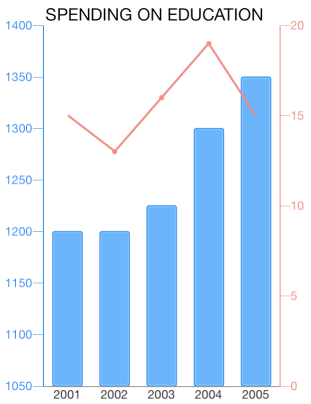
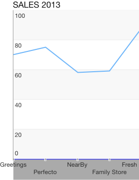
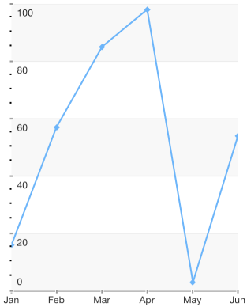
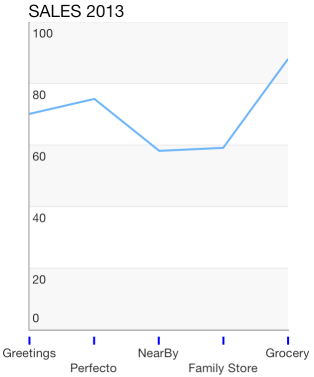
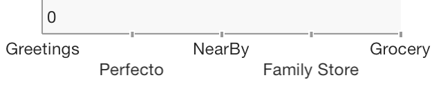
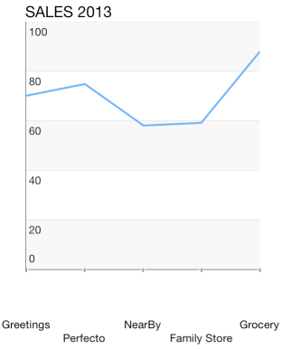
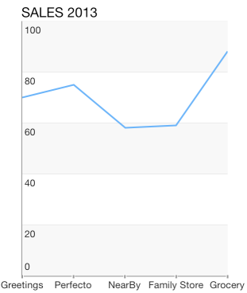
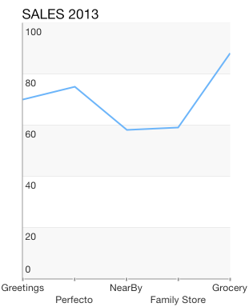
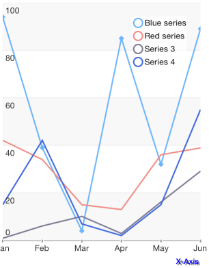

Chart Axes: Overview
TKChart renders its points in a coordinate system defined by its axes. To do this, axes specify the minimum and maximum values that can be presented on the plot area. There are a few different types of axes that can be used with TKChart. They include: numeric, date/time and categoric. You can assign each axis to different series and you can show multiple axes in chart. Axes contain various properties to control their position, style and behavior. All chart axes subclass from TKChartAxis.
- Use TKChartNumericAxis to present numeric values.
- Use TKChartDateTimeAxis to present date/time values.
- Use TKChartCategoryAxis to present categoric values.
This article discusses the common characteristics of the abstract class TKChartAxis, which is the single class all TKChart axes derive from. The axes automatically calculate its maximum and minimum properties, based on the incoming data.
Axes Common Properties
There are several important properties which allow customization of the behavior and appearance of each axis:
style - contains a set of properties which define the visual styling of an axis and its labels.
position - defines where the axis is positioned in relation to the plot area.
plotMode - defines how the associated series is rendered in relation to the axis.
allowZoom - allows zooming by this axis.
zoom - determines the zoom level for this axis.
allowPan - allows panning by this axis.
pan - determines the pan level for this axis.
title - defines the axis title. Note that it sets internally the attributedTitle property.
attributedTitle - defines the axis attributedTitle, which allows text formatting.
labelFormat - defines a format string for axis labels.
labelFormatter - defines a label formatter for axis labels.
tickCount - returns the count of axis labels.
Configure Axes Position
You can change the axis position by setting its position property to one of the following values: TKChartAxisPositionLeft, TKChartAxisPositionRight, TKChartAxisPositionTop and TKChartAxisPositionBottom.
The following lines of code demonstrate how you can create multiple axes at different positions:
Objective-C
TKChartNumericAxis *gdpInPoundsYAxis = [[TKChartNumericAxis alloc] initWithMinimum:@1050 andMaximum:@1400];
gdpInPoundsYAxis.position = TKChartAxisPositionLeft;
[chart addAxis:gdpInPoundsYAxis];
TKChartNumericAxis *gdpInvestmentYAxis = [[TKChartNumericAxis alloc] initWithMinimum:@0 andMaximum:@20];
gdpInvestmentYAxis.position = TKChartAxisPositionRight;
[chart addAxis:gdpInvestmentYAxis];
Swift
let gdpInPoundsYAxis = TKChartNumericAxis(minimum: 1050, andMaximum: 1400)
gdpInPoundsYAxis.position = TKChartAxisPosition.Left
chart.addAxis(gdpInPoundsYAxis)
let gdpInvestmentYAxis = TKChartNumericAxis(minimum: 0, andMaximum: 20)
gdpInvestmentYAxis.position = TKChartAxisPosition.Right
chart.addAxis(gdpInvestmentYAxis)

Configure Axes Appearance
You can customize any feature of the axis appearance. If you want to hide its line or change its line stroke or background, you can use the following peace of code:
Objective-C
xAxis.style.lineStroke = [TKStroke strokeWithColor:[UIColor blueColor]];
xAxis.style.backgroundFill = [TKSolidFill solidFillWithColor:[UIColor lightGrayColor]];
Swift
xAxis.style.lineStroke = TKStroke(color: UIColor.blueColor())
xAxis.style.backgroundFill = TKSolidFill(color: UIColor.lightGrayColor())

Configure Axes Ticks Appearance
In numeric/date-time axes you can specify the interval between axis ticks by setting the majorTickInterval and minorTickInterval properties:
Objective-C
TKChartNumericAxis *yAxis = (TKChartNumericAxis*)chart.yAxis;
yAxis.majorTickInterval = 20;
yAxis.minorTickInterval = 3;
yAxis.style.majorTickStyle.ticksHidden = NO;
Swift
let yAxis = chart.yAxis as! TKChartNumericAxis
yAxis.majorTickInterval = 20
yAxis.minorTickInterval = 3
yAxis.style.majorTickStyle.ticksHidden = false

You can customize the major and minor ticks of axis by manipulating the majorTickStyle and minorTickStyle properties.
Objective-C
xAxis.style.minorTickStyle.ticksHidden = NO;
xAxis.style.majorTickStyle.ticksStroke = [TKStroke strokeWithColor:[UIColor blueColor]];
xAxis.style.majorTickStyle.ticksLength = 10;
xAxis.style.majorTickStyle.ticksWidth = 1;
xAxis.style.majorTickStyle.ticksOffset = 5;
Swift
xAxis.style.majorTickStyle.ticksHidden = false
xAxis.style.majorTickStyle.ticksStroke = TKStroke(color: UIColor.blueColor())
xAxis.style.majorTickStyle.ticksLength = 10
xAxis.style.majorTickStyle.ticksWidth = 1
xAxis.style.majorTickStyle.ticksOffset = 5

In addition to the common tick style customizations, you can specify the first and last ticks visibility by setting minTickClippingMode and maxTickClippingMode properties:
Objective-C
xAxis.style.majorTickStyle.minTickClippingMode = TKChartAxisClippingMode.Hidden;
xAxis.style.majorTickStyle.maxTickClippingMode = TKChartAxisClippingMode.Visible;
Swift
xAxis.style.majorTickStyle.minTickClippingMode = TKChartAxisClippingModeHidden
xAxis.style.majorTickStyle.maxTickClippingMode = TKChartAxisClippingModeVisible

Configure Axes Label Appearance
You can configure the axis label appearance by manipulating the labelStyle property of the axis style object. If you want to change the font, text color, shadow color and offset, you should modify the corresponding properties:
Objective-C
xAxis.style.labelStyle.font = [UIFont boldSystemFontOfSize:10];
xAxis.style.labelStyle.textColor = [UIColor blueColor];
xAxis.style.labelStyle.shadowColor = [UIColor grayColor];
xAxis.style.labelStyle.shadowOffset = CGSizeMake(1, 1);
[chart reloadData];
Swift
xAxis.style.labelStyle.font = UIFont.systemFontOfSize(10)
xAxis.style.labelStyle.textColor = UIColor.blueColor()
xAxis.style.labelStyle.shadowColor = UIColor.grayColor()
xAxis.style.labelStyle.shadowOffset = CGSizeMake(1, 1)
chart.reloadData()
You can define the label offset and alignment by setting the textOffset and textAlignment properties:
Objective-C
xAxis.style.labelStyle.textAlignment = TKChartAxisLabelAlignmentBottom;
xAxis.style.labelStyle.firstLabelTextAlignment = TKChartAxisLabelAlignmentBottom;
xAxis.style.labelStyle.textOffset = UIOffsetMake(10, 50);
xAxis.style.labelStyle.firstLabelTextOffset = UIOffsetMake(10, 50);
[chart reloadData];
Swift
xAxis.style.labelStyle.textAlignment = TKChartAxisLabelAlignment.Bottom
xAxis.style.labelStyle.firstLabelTextAlignment = TKChartAxisLabelAlignment.Bottom
xAxis.style.labelStyle.textOffset = UIOffsetMake(10, 50)
xAxis.style.labelStyle.firstLabelTextOffset = UIOffsetMake(10, 50)
chart.reloadData()

You can change the label fitting mode in the following manner:
Objective-C
xAxis.style.labelStyle.fitMode = TKChartAxisLabelFitModeNone;
Swift
xAxis.style.labelStyle.fitMode = TKChartAxisLabelFitMode.None

Objective-C
xAxis.style.labelStyle.fitMode = TKChartAxisLabelFitModeMultiline;
Swift
xAxis.style.labelStyle.fitMode = TKChartAxisLabelFitMode.Multiline

Configure Axes Title Appearance
In order to change the change the axis title font, text color, shadow color, alignment and offset, you should modify the corresponding properties:
Objective-C
xAxis.title = @"X-Axis";
xAxis.style.titleStyle.textColor = [UIColor blueColor];
xAxis.style.titleStyle.font = [UIFont boldSystemFontOfSize:11];
xAxis.style.titleStyle.shadowColor = [UIColor grayColor];
xAxis.style.titleStyle.shadowOffset = CGSizeMake(2, 2);
xAxis.style.titleStyle.alignment = TKChartAxisTitleAlignmentRightOrBottom;
[chart reloadData];
Swift
xAxis.title = "X-Axis"
xAxis.style.titleStyle.textColor = UIColor.blueColor()
xAxis.style.titleStyle.font = UIFont.boldSystemFontOfSize(11)
xAxis.style.titleStyle.shadowColor = UIColor.grayColor()
xAxis.style.titleStyle.shadowOffset = CGSizeMake(2, 2)
xAxis.style.titleStyle.alignment = TKChartAxisTitleAlignment.RightOrBottom
chart.reloadData()

Axes Types
Any Cartesian series supports the following axes:
Warning: Note that Pie area does not support axes.